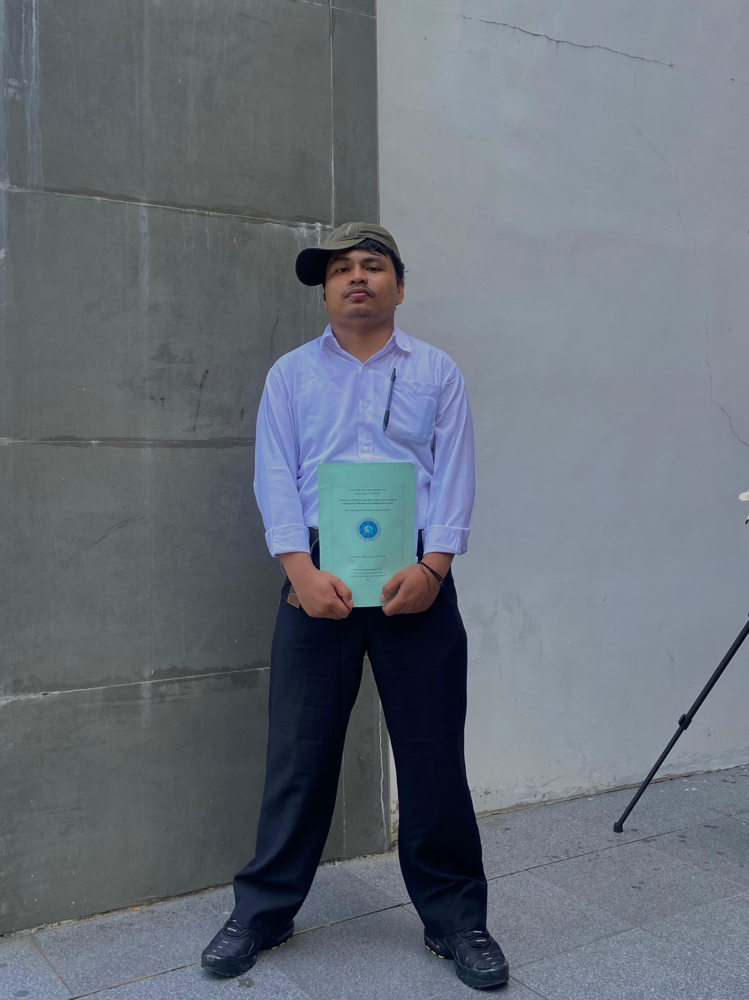
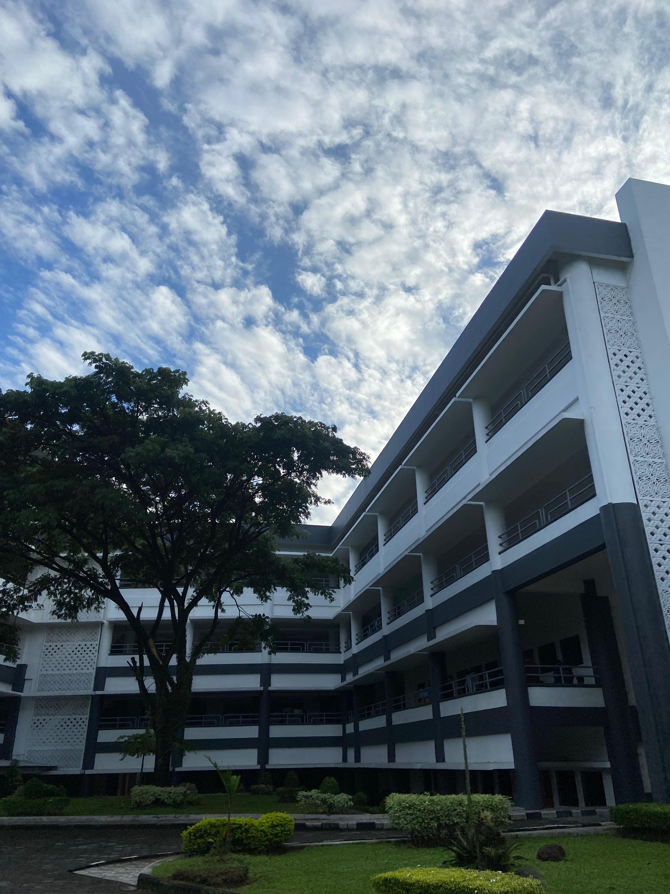
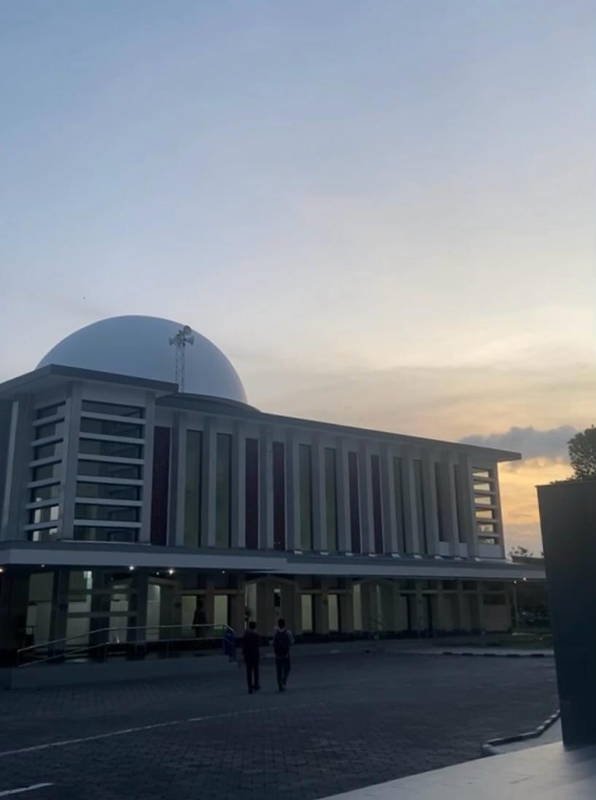
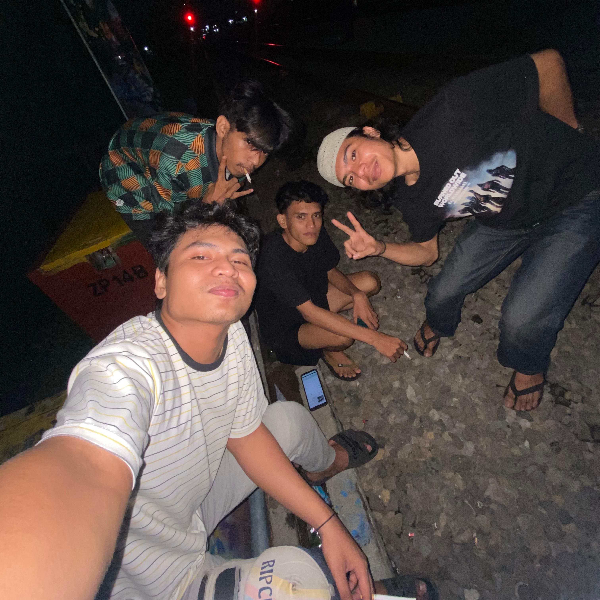
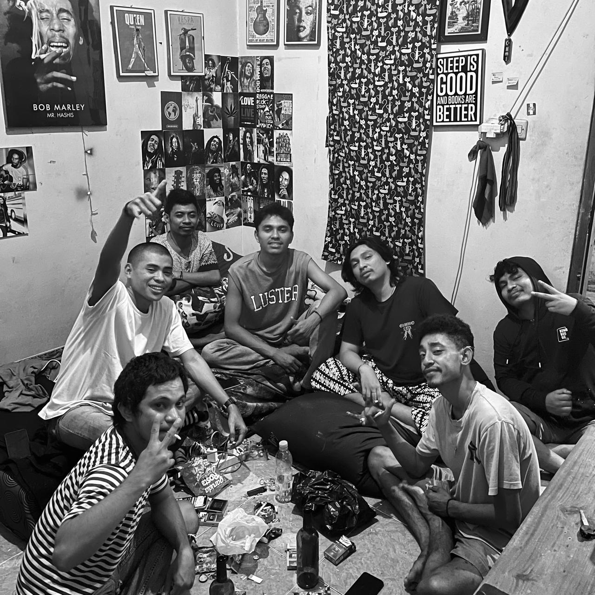

ABOUT ME
Saya adalah mahasiswa aktif berkuliah di Universitas Teknologi Yogyakarta, prodi Informatika, yang sedang berfokus pada pengembangan web dan mobile
"Disini, beta banyak balajar dari hidup deng pengalaman . Kadang susah, kadang sanang, tapi samua itu biking katong jadi lebih kuat.
Beta percaya, setiap proses dalam hidup itu bukan cuma cobaan, tapi juga kesempatan par katong bertumbuh dan jadi lebih baik, setiap
hal yang datang itu pasti samua bawa hikmah. Dari Ambon sampe ka Yogyakarta. Setiap sudut akang kota ini, kaya pung carita -dari langit
sore babunyi suara motor deng oto, sampe malam yang suara angin datang bawa sanang. Di sini, beta badiri seng sandiri, ada ade, kaka,
tamang dong yang tarus baku kele. Memang katong jauh dari ambon tapi jang lupa akang pela-gandong"
— Jhalopax

SEMPROTULUTATION- Sat Set Sat Set

Kelas Universitas Teknologi Yogyakarta

Halaman Universitas Teknologi Yogyakarta

Masjid Universitas Teknologi Yogyakarta

DUO

TRIO

SQUAD

RAMERAME
"Menerima kenyataan dengan lapang dada adalah inti dari stoicism, Dengan menerima apa adanya, kita menemukan kebebasan sejati." -Marcus Aurelius